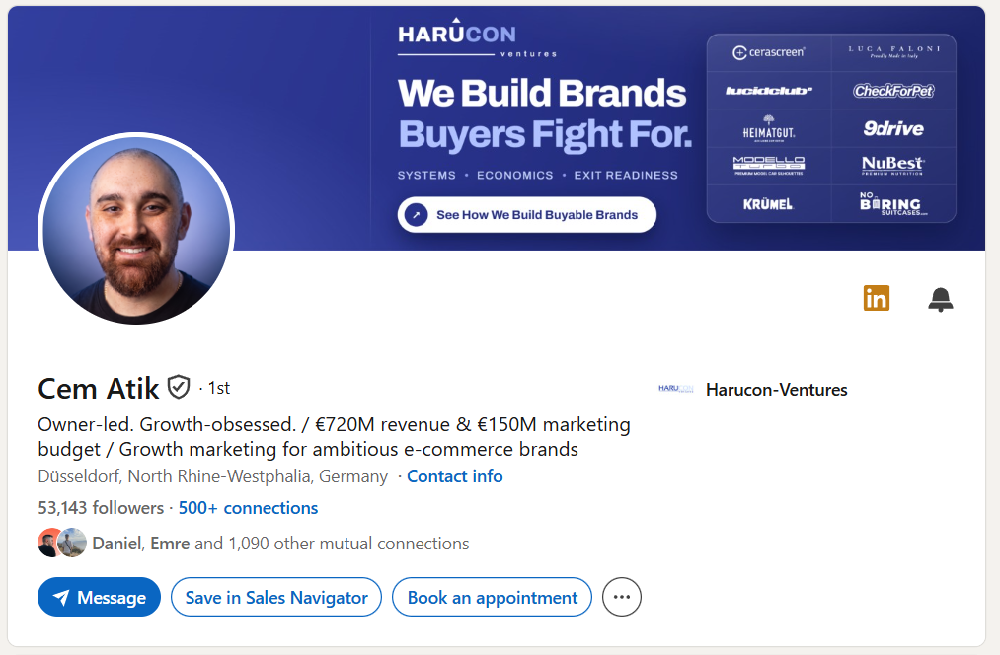
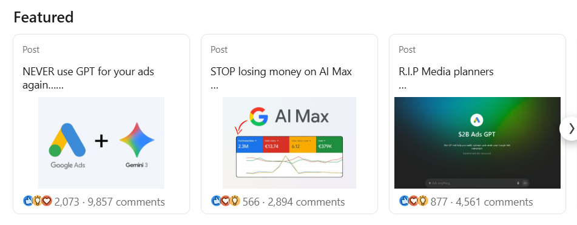
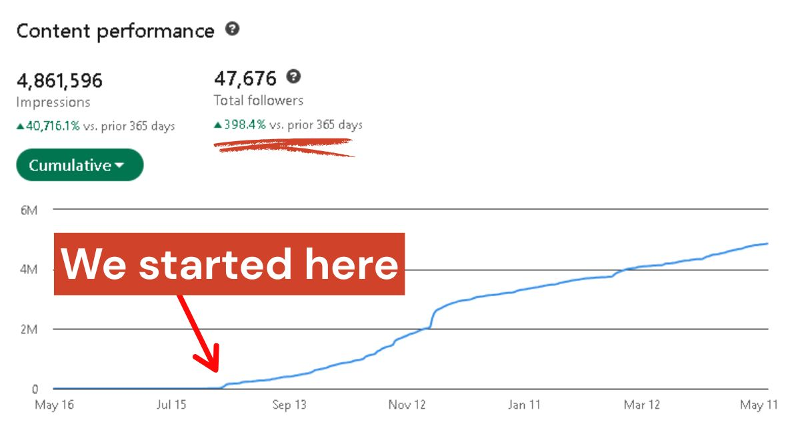
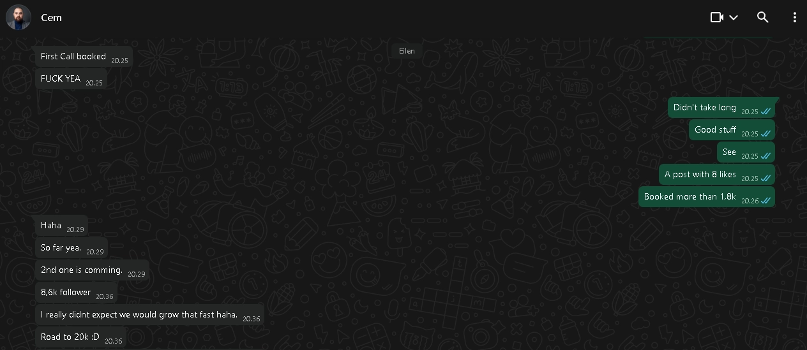

The client
Cem Atik runs Harucon Ventures out of Düsseldorf, a marketing agency for e-commerce brands. He sells to those brands and the people who own them.
The figures on this page come from his own reporting to us and from the account itself.
Where he started
About 5,000 followers and already publishing regularly. Advice, mostly. People read it and moved on.
Nothing in his calendar was coming from any of it.

What we ran
- Wrote the briefCompany type, size, the person who signs and what a client worth keeping looks like. Every meeting was later checked against it.
- Rebuilt the profileIn the words his buyers use when they describe the problem he solves, not the words agencies use to describe themselves.
- Built the target listsOne per buyer type, gated by company type, size and geography.
- Sent connection requests with no messageOnce a request is accepted, what he publishes shows up in that person's feed.
- Changed what went outHis own client results instead of advice. What the client came in with, what was done, and what it returned.
- Sent one message per contactOnly after the posts had been running, so it arrived from someone they already recognised.
- Qualified every reply in the inboxCompany, budget, timing and who signs. Only the ones that cleared the brief went to his calendar.

Results
He came to us with an audience that read what he wrote and never got in touch. The first change was what went out. The second was who was seeing it.
Calls in his first week. Off what he published, not off a list.
Sales meetings a quarter. Where the account runs today.
Followers today, up from about 5,000. The people who buy from him are in that number, which is the part that matters.
Impressions on the account in twelve months.
Still a client.
What changed
Before
Advice posts, written for everyone. An audience that agreed with him and did nothing. New work arriving through his own network, when it arrived.
After
His own client results, written for one buyer. That buyer in the audience on purpose. One message each, sent after they already knew who he was.


What it took from him
A working session to set the brief, approval of the posts before they went out, and the calls themselves. We wrote the posts, built the lists, sent the requests and messages, and handled the inbox.
No ads. No cold email.
How we work with agency owners
90 days, run end to end. We write what goes out, build the lists, send the requests and messages, and qualify every reply before it reaches your calendar.
Book a 30 minute audit call
I go through your profile, what you have published recently and where your clients come from today. You leave with what I would change, the buyers we would put you in front of, and the first posts we would run.
You keep the audit whether or not we work together.
Book the audit callTimi Merivirta, founder, InLead
timi@inleadagency.com
Figures were reported to us by the client. He is not named here. Follower counts and meeting volumes describe one account and are not a prediction of what another account will do.